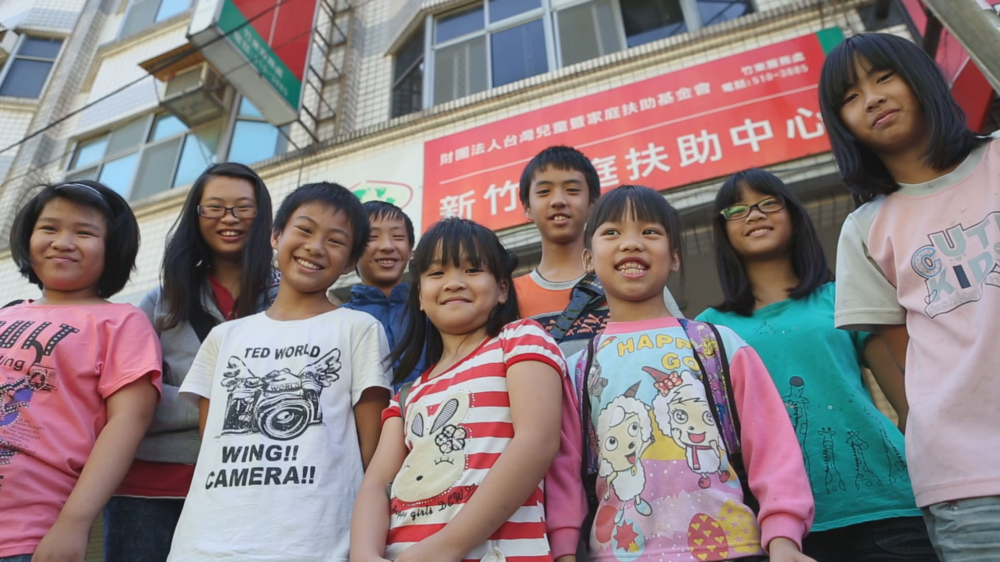
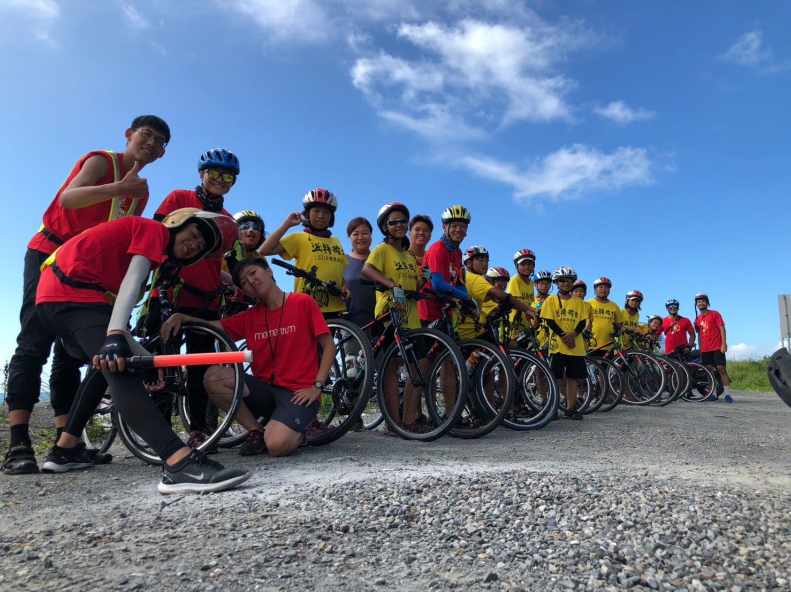

愛陪伴課輔計畫
家扶中心
【贊助期間】2012年 ~ 至今
全台灣有將近34萬的貧困兒少，超過半數無法接受政府補助，而他們的父母常僅能力求家庭三餐溫飽而已，無法顧及孩子的課後生活照顧。家扶基金會長期以來關注弱勢家庭學齡兒童的需求，全台各地所屬家扶中心更運用彈性方式提供課業輔導。更重要的是，透過課後陪讀的方式給予孩子們關懷，協助其及早建立學習興趣與自信心，而不衍生其他社會問題。

雲林蚵寮學堂
【贊助期間】2014年 ~ 至今
位於雲林縣沿海地區的蚵寮村，受到漁業資源枯竭、經濟不景氣的影響，年輕一輩只得離鄉打拚，留在家鄉的多是老人與小孩。在地人陳玉釵阿嬤，發現村內有太多隔代教養、單親或新移民家庭的孩子，而家長也無力管教孩子。因而籌創了課輔班，為這些弱勢孩子們開啟另一扇窗。
阿里山部落教室
【贊助期間】2012年 ~ 至今
位於阿里山鄉的山美部落教室、新美國小，透過營養晚餐及課後輔導計畫，提供這些家境清寒的孩子在父母回家前，有伴讀媽媽和志工學生的陪伴，完成作業並加強課業輔導，並且每天都有均衡營養的晚餐，讓孩子身心發展獲得妥善照顧。
嘉義水上鄉傳愛課輔班
【贊助期間】2014年 ~ 至今
1999年嘉義浸宣教會被持刀男子闖入，闕牧師被刺身亡，兩個女兒也身受重傷。遭逢家庭劇變的牧師娘闕戴淑媺以淚洗面多天後，決定原諒凶手，用愛讓自己遠離仇恨。她體悟到問題出在教育及家庭因素上，也看到當地國小學童放學後，就到網咖或街上流連，說謊、打架的事更是層出不窮。因此，闕師母決定開辦課輔班，用愛療傷自己，更用愛來幫助弱勢的孩童，改寫他們的生命故事。
屏東希望庇護教室
【贊助期間】2012年 ~ 至今
屏東地區外籍配偶子女所佔比率日趨增加，這些家庭比一般台灣家庭承受更多的壓力，孩子在教育上所面對的困境與所衍生的挑戰，也是愈來愈多。謝光忠牧師成立希望庇護教室，提供新住民、單親等弱勢家庭學童訪視、課輔、送餐及生命教育等服務，彌補家庭不完整的缺憾，帶給孩子更多的機會。
屏東高樹鄉慈惠善導書院課輔班
【贊助期間】2014年 ~ 至今
不忍見偏鄉弱勢家庭孩童因家庭經濟或教育偏差而受苦，或因弱勢的窘境，無法充分發展，1999年身為單親媽媽的陳文靜，傾注畢生所有積蓄，以「陪伴教育」為理念，開辦免費課後輔導班。慈惠善導書院施予補救教學及品德、農事、家事等多元教育，並供應餐食，成為弱勢孩童一個全年無休的課後照顧安置所。
台東縣豐田兒童少棒之家
【贊助期間】2018年 ~ 至今
台東豐田少棒之家，非一般棒球隊，是從教育角度出發採取全人格教育來對待孩子的非營利組織。他們透過棒球培養孩子的毅力及自信，更營造為孩子們的另一個家。孩子們必須學會自己整理好自己的物品、按時把作業完成，照顧孩子們的營養所需、關心孩子們的體能狀況，彌補孩子們的家庭功能失調。這隻棒球隊不僅改變了校園裡的學習風氣，更扭轉了許多孩子們的命運。
高雄市尼布恩人文教育關懷協會
【贊助期間】2019年 ~ 至今
八八風災後，具有聲樂背景的陳俊志受邀指導災區小朋友唱歌，希望憑藉音樂的力量，穩定災區孩子的心靈。指導歌唱期間，陳俊志深刻體會到偏鄉醫療和教育資源的不足，因而成立「尼布恩人文教育關懷協會」，募資籌設「尼布恩學堂」，提供孩子們讀書空間。陳醫師不僅帶給偏鄉孩子自信，更全方位照顧孩子的生活與學習。
南投彩虹雙福課輔班
【贊助期間】2014年 ~ 至今
在921地震過後，劉邦彥從台北來到南投，投入災後重建工作。他也看見當地部落學童的課輔需求，於是在布農族、泰雅族與賽德克族部落都開辦了課輔班。彩虹雙福課輔班訓練山上的原住民媽媽擔任課輔媽媽，考試通過後再教小朋友。他們特別重視對小朋友的身教與閱讀，給予更多的關懷，希望原住民孩子能有更寬廣的未來。
小草書屋
【贊助期間】2019年 ~ 至今
小草書屋創辦人林峻丞，2006年開始在家鄉三峽，組成絲瓜小隊，帶著孩子開墾農田種絲瓜，賺學雜費、營養午餐費及圓夢基金。2015年正式啟動籌建小草書屋，由三峽在地國民小學轉介高關懷家庭的孩子。開始每日的課後陪伴輔導工作，協助他們完成作業，培養對事的責任感；一起用餐，提供他們平日晚餐與暑期早午餐；打掃書屋環境，學會自己照顧整潔，與多元課程學習。

社團法人iPower培力學社
【贊助期間】2019年 ~ 至今
社團法人IPOWER培力學社是由曾經榮獲美國紐約時報最佳教師的楊筱薇所帶領，培力學社深耕於北海岸偏遠社區超過三年，主要服務對象為高風險青少年，透過長期陪伴在地兒少，透過語言、課輔、社造與多元智能探索，帶著學子，把社區的每一寸土，每一朵花，每一塊地都變成教材，利用日常生活事物開啟學習的目光並同時支持台灣及國際青年，與他們一同找出屬於自己的學習動能，將老舊社區的元素連結文本內的學習，與他們一同重新檢視自己生命中所遇見的問題，讓他們成為解決自己問題的方法。
TOP